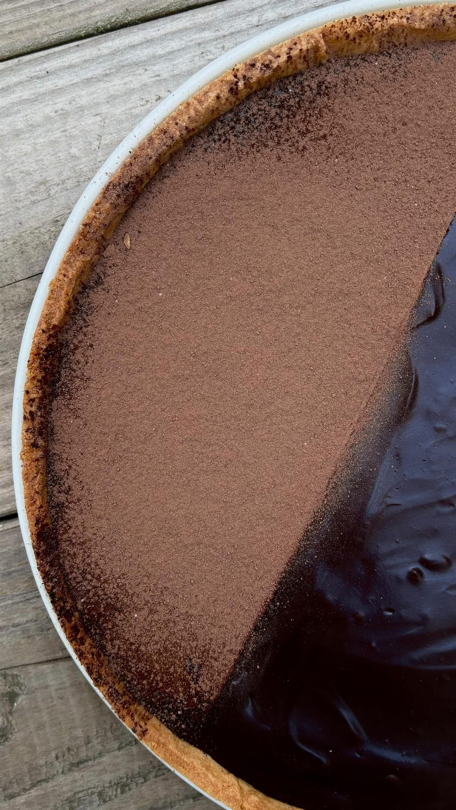

Ma tarte d'anniversaire pour un Sunday Mood particulier : une pâte sucrée aux amandes et une ganache lisse et brillante, 100 % chocolat noir pour un rendu bien corsé.
Temps total : 2 h 30 (dont repos et prise)
Mélanger les ingrédients secs : poudre d'amande, farine, sucre glace, fécule de maïs et sel, puis ajouter le beurre et l'œuf. Former une pâte et réserver 30 minutes au frais.
Étaler la pâte sur 3 mm. Découper des bandes et un disque à l'emporte-pièce pour foncer le moule (fond et contours).
Piquer la pâte, la lester avec des billes de cuisson (ou, technique de mamie : papier sulfurisé + pois cassés ou haricots secs) et enfourner à 175 °C pendant une vingtaine de minutes. Laisser refroidir.
Faire fondre le chocolat au bain-marie.
Porter la crème à ébullition puis la verser en trois fois sur le chocolat, en mélangeant pour obtenir une ganache lisse et brillante.
Verser sur le fond de tarte refroidi, lisser et laisser prendre 1 h à température ambiante, puis un petit passage au frais.
Finition : un voile de cacao en poudre.
Le petit plus de LaurieSortez la tarte 15 à 20 minutes avant de la déguster : la ganache retrouve tout son fondant. Recette largement inspirée de Cyril Lignac, ici en version 100 % chocolat noir pour un rendu bien corsé.
Retrouvez toutes mes recettes, et suivez les nouveautés chaque semaine sur Instagram.